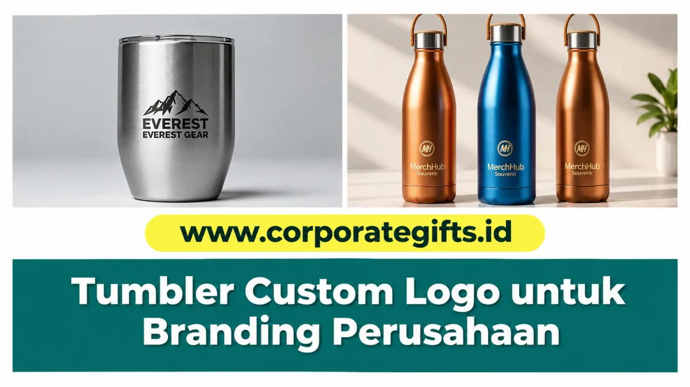

Corporate Gifts ID - Tumbler custom logo adalah botol minum yang dicetak secara personal dengan logo, nama instansi, atau tagline perusahaan untuk dijadikan souvenir kantor, hadiah klien, maupun merchandise promosi event. Di antara lautan pilihan cinderamata korporat, tumbler custom secara konsisten menduduki peringkat teratas karena fungsionalitasnya yang tinggi, masa pakai panjang, serta memberikan eksposur branding berkelanjutan setiap hari.
Dengan tersedianya aneka material mulai dari stainless steel SUS304 food-grade, aluminium sporty, plastik BPA-free, hingga kaca elegan, panitia pengadaan perlu memahami keunggulan teknis tiap varian agar investasi cinderamata menghasilkan brand recall yang optimal.
Poin Kunci Pemilihan Tumbler Custom:
- Eksposur Merek Harian: Digunakan berulang kali di meja kerja, rapat direksi, gym, dan mobilitas komuter harian.
- Dukungan Kampanye ESG & Go-Green: Mengurangi sampah botol plastik sekali pakai secara nyata di lingkungan kerja.
- Teknik Cetak Presisi: Pilihan grafir laser permanen untuk kesan eksekutif mewah atau print UV full-color untuk logo bergradasi.
- Nilai Guna Tinggi: Persepsi penerima terhadap tumbler berinsulasi ganda setara dengan barang ritel premium.
Mengapa Tumbler Custom Menjadi Souvenir Kantor Favorit?
Popularitas tumbler dalam ekosistem merchandise perusahaan didorong oleh beberapa faktor fundamental:
- Fungsional & Dipakai Setiap Hari: Berbeda dengan plakat pajangan, tumbler selalu diletakkan di samping laptop saat jam kerja, membuat logo Anda terpampang jelas di depan mata klien sepanjang hari.
- Mendukung Gaya Hidup Sehat & Ramah Lingkungan: Pembagian tumbler branded secara resmi memperkuat citra kepedulian perusahaan terhadap kesehatan hidrasi karyawan dan pelestarian alam.
- Area Cetak Luas & Fleksibel: Bentuk silinder tumbler menyediakan ruang visual 360 derajat untuk mencetak logo, pola grafis tematik, hingga kutipan motivasi.
- Persepsi Nilai Tinggi: Tumbler berbobot padat dengan finishing matte atau doff memberikan impresi kemewahan yang mengangkat reputasi korporasi.
5 Jenis Tumbler Custom Logo yang Paling Populer
Kenali karakteristik teknis lima model tumbler unggulan berikut untuk menyesuaikan dengan target penerima:
1. Tumbler Stainless Steel Tahan Panas & Dingin
Varian paling prestisius dengan dinding ganda hampa udara (double-wall vacuum insulated):
- Keunggulan: Menjaga suhu air panas hingga 8 jam dan minuman es hingga 12 jam, anti-karat, dan bebas bau logam berkat material SUS304 food-grade.
- Target Ideal: Souvenir pimpinan direksi, hadiah kemitraan VIP, dan paket apresiasi tahunan staf berprestasi.
2. Tumbler Aluminium
Pilihan logam ringan dengan siluet ramping dan dinamis:
- Keunggulan: Sangat ringan dibawa bepergian, tahan benturan keras, dan tersedia dalam aneka warna metalik cerah.
- Target Ideal: Acara gathering outdoor, fun walk perusahaan, komunitas olahraga, dan kegiatan lapangan.
3. Tumbler Plastik (Wajib BPA-Free)
Varian botol minum berbahan polimer food-grade seperti PP (Polypropylene) atau Tritan:
- Keunggulan: Bobot sangat ringan, variasi bentuk inovatif dengan infuser buah atau sedotan pop-up, serta harga sangat ekonomis untuk jumlah besar.
- Target Ideal: Pembagian massal seminar kit mahasiswa, orientasi karyawan baru (onboarding), dan merchandise pameran expo.

Koleksi tumbler stainless steel cangkir kopi berlogo grafir laser dan botol minum metalik warna bronze, biru safir, serta emas dengan pegangan tali kulit.
4. Tumbler Insert Paper
Tumbler berdinding ganda transparan dengan selipan kertas cetak full-color:
- Keunggulan: Kebebasan desain visual 100% tanpa batasan warna, foto ilustrasi, atau gradasi kompleks dengan biaya cetak sangat hemat.
- Target Ideal: Peluncuran produk baru, kampanye promosi berjangka waktu tertentu, dan souvenir acara keluarga kantor.
5. Tumbler Kaca (Glass Tumbler)
Botol minum berbahan kaca borosilikat murni yang dibalut sleeve pelindung silikon atau anyaman bambu:
- Keunggulan: Menjaga rasa asli minuman tanpa residu kimiawi, tampilan estetik minimalis, dan sangat mudah dibersihkan.
- Target Ideal: Cinderamata instansi kesehatan, klinik estetika, brand kuliner artisan, dan hampers ramah lingkungan.
Tabel Perbandingan Jenis Material Tumbler
Panduan matriks spesifikasi teknis dan kecocokan metode cetak untuk tiap tipe tumbler:
| Jenis Tumbler | Material Utama | Teknik Cetak Terbaik | Kelebihan Utama |
|---|---|---|---|
| Vacuum Tumbler | Stainless Steel SUS304 | Laser Grafir & Print UV | Tahan panas 8 jam, mewah & tahan lama |
| Sport Bottle | Aluminium Padat | Sablon & Laser Grafir | Ringan, kokoh & pilihan warna variatif |
| Eco Plastic Bottle | Plastik PP / Tritan BPA-Free | Sablon Rotary & UV Flatbed | Ekonomis, ringan & aman untuk hidrasi harian |
| Insert Paper | Plastik AS Dinding Ganda | Digital Printing Art Paper | Bisa desain foto full-color 360 derajat |
| Glass Tumbler | Borosilikat + Silikon Sleeve | Sablon Kaca & Grafir Kayu | Rasa minuman murni, estetik & premium |
Memilih Teknik Kustomisasi Logo yang Tepat
Kualitas visual logo pada bodi tumbler sangat ditentukan oleh teknik aplikasi cetak yang dipilih:
- Laser Grafir (Engraving): Mengikis lapisan cat luar untuk memunculkan kilau logam asli bodi tumbler. Hasil cetak permanen seumur hidup, anti-pudar, dan memberikan kesan elegan tanpa batasan usia pemakaian.
- Print UV Flatbed: Menyemprotkan tinta khusus yang langsung dikeringkan dengan sinar ultraviolet. Mampu mencetak logo bergradasi rumit, efek tekstur timbul (emboss), dan separasi multi-warna dengan ketajaman piksel tinggi.
- Sablon Rotary: Teknik cetak saring melingkar yang sangat efektif dan hemat biaya untuk pemesanan massal skala ribuan unit dengan logo 1 hingga 2 warna solid.
Kesimpulan: Jadikan Tumbler sebagai Wajah Brand Perusahaan
Investasi pada tumbler custom logo berkualitas adalah langkah promosi cerdas yang memberikan imbal hasil branding jangka panjang. Botol minum yang nyaman digunakan akan menjadi pendamping setia klien, membawa nama baik institusi Anda ke mana pun mereka melangkah.
Wujudkan souvenir tumbler eksklusif perusahaan Anda bersama katalog souvenir kantor CorporateGifts.ID. Dapatkan layanan konsultasi material gratis, sampel mockup visual presisi, serta jaminan pengerjaan tepat waktu dengan standar kontrol mutu ketat.